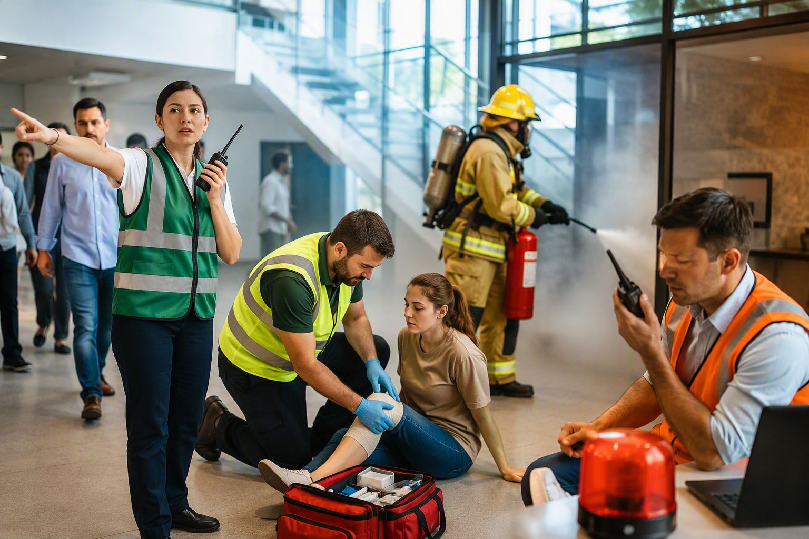

Servicios
¿La normativa?
¿La normativa?
La conformación y funcionamiento de las brigadas de emergencia en Colombia están respaldados principalmente por el Decreto 1072 de 2015 y la Resolución 0312 de 2019, normas que hacen parte del Sistema de Gestión de Seguridad y Salud en el Trabajo (SG-SST).
Decreto 1072 de 2015
Establece la obligación de las empresas de implementar medidas para la prevención, preparación y respuesta ante emergencias. Exige identificar amenazas y vulnerabilidades, definir procedimientos de actuación, designar personal responsable, capacitar a los trabajadores, realizar simulacros periódicos y garantizar los recursos necesarios para una respuesta efectiva.
Resolución 0312 de 2019
Define los estándares mínimos del SG-SST que deben cumplir los empleadores. Entre ellos, la elaboración y actualización del plan de emergencias, la conformación de brigadas, la capacitación de los brigadistas, la dotación de equipos adecuados, la realización de simulacros y la evaluación continua de la capacidad de respuesta de la organización.

¿Listos para conformar tu brigada?
Te acompañamos desde el diagnóstico hasta los simulacros.